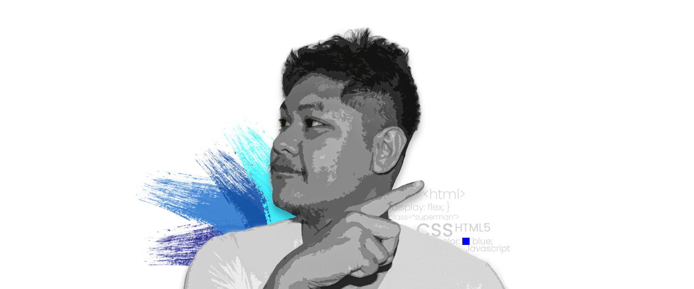
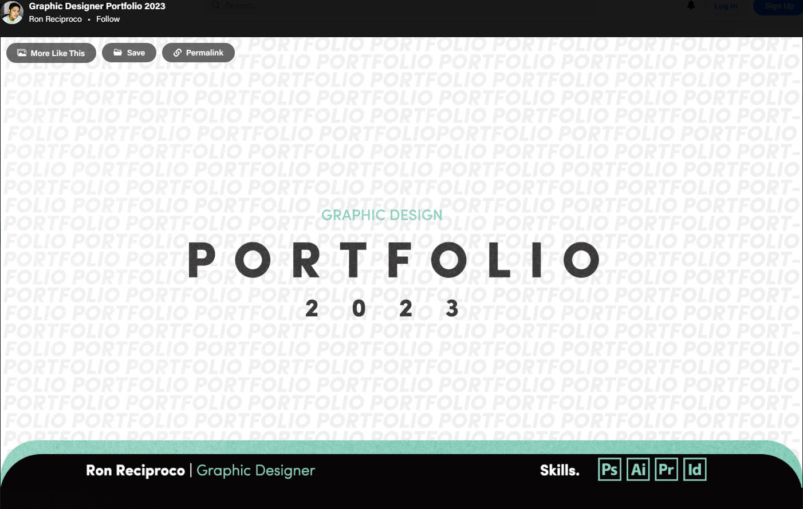

I'm a Front Web Developer and Graphic Designer with a passion for crafting immersive digital experiences. My skill set includes creating captivating multimedia content and dynamic animations that breathe life into brands. As a Shopify expert, I specialize in building e-commerce solutions that seamlessly merge design and functionality.
Proficient in video editing, I bring stories to life, while my expertise in branding ensures your identity is striking and unforgettable.
I excel in packaging design and logo creation, combining creativity with strategy.
From crafting engaging social media content to producing compelling blog imagery, I deliver designs that resonate.
Join me in shaping the future of design and technology.


